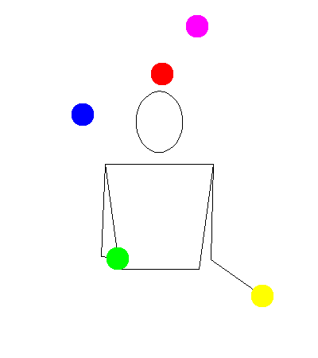
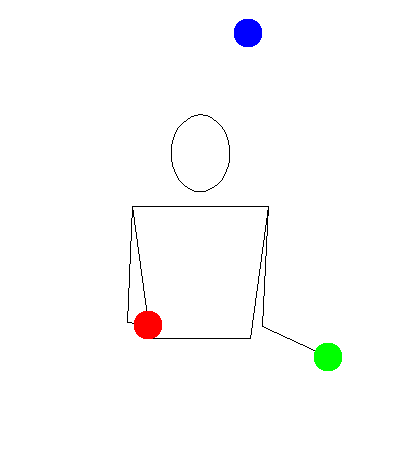
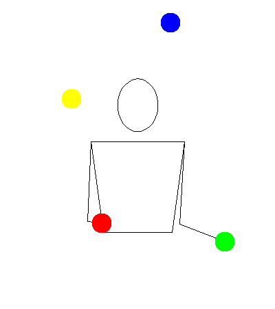

Five

Description
Prerequisites
Tutorial
Step 1

Step 2

Step 3
Tips
- Height and consistency are key.
- This takes speed and strength. It can be easier to use somewhat lighter balls that are softer in order to prevent arm pain.
Fun Facts
- Before people learned this pattern, the typical 5-ball pattern was two in one hand and three in the other.